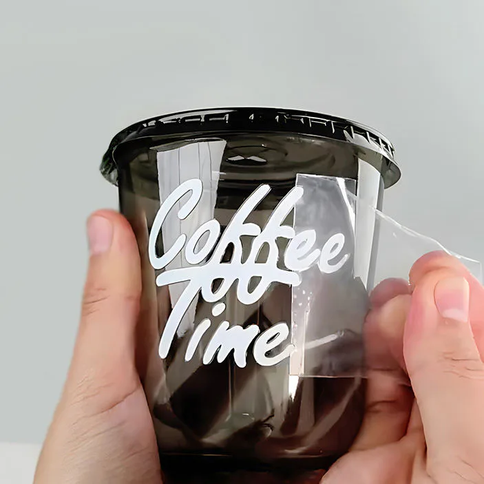

Short answer
For coffee bags, paper or film labels can both work depending on the bag surface and brand style. For cold brew bottles, film labels are often safer because refrigeration and condensation are common. For cups and cafe packaging, confirm surface, application method and whether the label needs to handle moisture or heat.
Choose material by coffee package type
| Package | Common label choice | What to check |
|---|---|---|
| Coffee bags | Paper labels, textured paper or white film. | Bag surface, oil transfer, fold position and hand application. |
| Cold brew bottles | White BOPP, clear BOPP or PET film. | Condensation, bottle curve, barcode contrast and refrigeration. |
| Takeaway cups | Paper labels or cup transfer labels. | Cup surface, moisture, heat exposure and application speed. |
| Sample packs | Small roll labels or sheet labels. | Low quantity, multiple roast variants and readable flavor details. |
Layout details coffee buyers often forget
Coffee labels usually need more than a logo. Roast level, origin, flavor notes, grind type, weight, barcode, roast date, best-before area and batch code may all compete for space. If the package is small, plan the information hierarchy before choosing the label size.
Small batch and seasonal coffee labels
Coffee brands often need rotating roast names, seasonal designs and small test runs. Roll labels can support repeat application, while short runs can help test packaging before a larger order. Keep the core label size consistent when possible so each new roast does not require a new package layout.
What to send for a coffee label quote
Related guides
For cold bottle packaging, read waterproof beverage labels. For size planning, use the custom label size guide. If your design has many roast variants, review custom label MOQ before ordering.
FAQ
Can coffee bag labels use kraft paper style?
Yes. Many coffee bags use a natural paper look, but the adhesive should match the bag surface and handling condition.
Do cold brew labels need clear film?
Clear film is useful when the bottle or drink color should show through. White film is better when strong color, small text or barcode contrast matters more.
Can one coffee label design fit bags and bottles?
The brand style can match, but the label size, material and information layout should usually be adjusted for each package type.